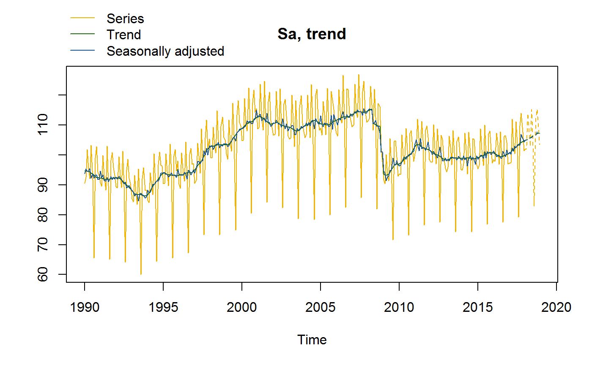

RJDemetra is an R interface to JDemetra+, the seasonal adjustment software officially recommended to the members of the European Statistical System (ESS) and the European System of Central Banks. JDemetra+ implements the two leading seasonal adjustment methods TRAMO/SEATS+ and X-12ARIMA/X-13ARIMA-SEATS.
Besides seasonal adjustment, JDemetra+ bundles other time series models that are useful in the production or analysis of economic statistics, including for instance outlier detection, nowcasting, temporal disaggregation or benchmarking.
For more details on the JDemetra+ software see https://github.com/jdemetra/jdemetra-app.
RJDemetra offers full access to all options and outputs of JDemetra+.
Installation
RJDemetra relies on the rJava package and Java SE 8 or later version is required.
# Install release version from CRAN
install.packages("RJDemetra")
# Install development version from GitHub
# install.packages("devtools")
devtools::install_github("jdemetra/rjdemetra")If you have troubles with the installation, check the installation manual.
Basic example
To seasonally adjust a time series with a pre-defined specification you can either use the x13() function for the X-13ARIMA method or the tramoseats() function for the TRAMO-SEATS method.
library(RJDemetra)
myseries <- ipi_c_eu[, "FR"]
x13_model <- x13(myseries) # X-13ARIMA method
ts_model <- tramoseats(myseries) # TRAMO-SEATS method
# Basic plot with the original series, the trend and the SA series
plot(x13_model, type_chart = "sa-trend")